Matplotlib in 60 Minutes
Matplotlib is one of the most popular and flexible function libraries for data visualization in use today. This crash course is meant to summarize and compliment the official documentation, but you are encouraged to refer to the original documentation for fuller explanations of function arguments.
Prerequisites
In order to follow this course, you will need to be familiar with:
The Python 3.X language, data structures (e.g. dictionaries), and built-in functions (e.g. string manipulation functions)
NumPy: array I/O and manipulation
It will also help to have experience with:
SciPy
Pandas
LaTeX math typesetting (reference links are provided)
Before we get started, let’s the meanings of the terms args and kwargs, since they will appear frequently:
argsrefer to positional arguments, which are usually mandatory, but not always. These always come before thekwargs.kwargsare short for keyword arguments. These are usually optional, but it’s fairly common for some python functions to require a variable subset of all available kwargs dependent on previous inputs. These always come afterargs.
It will also help you to remember what classes, methods, and attributes are:
classesare templates to make Python objects. They have a built-in__init__()function to set initial properties that must be defined when an object of this class is created, and they methods and attributes to compute values or functions with. Once a class is defined, you typically define an instance of it likeobj = MyClass(...).methodsassociate functions with the class and allow quick evaluation for each class instance. For an objectobjof classMyClassthat has methods, the method syntax looks like this:obj.MyMethod()orobj.MyMethod(*args, **kwargs).attributeslet you automatically compute and store values that can be derived for any instance of the class. For an objectobjwith an attributeMyAttribute, the syntax is``obj.MyAttribute``; i.e. the main difference between attributes and methods is that attributes do not take arguments.
Load and Run
If you use Matplotlib at the command line, you will need to load the module Tkinter and then, after importing matplotlib, set matplotlib.use('TkAgg') in your script or at the Python prompt in order to view your plots.
Alternatively, you can use a GUI, either JupyterLab or Spyder, but you will still have to pre-load Matplotlib and any other modules you want to use (if you forget any, you’ll have to close the GUI and reopen it after loading the missing modules) before loading either of them. The command to start Jupyter Lab after you load it is jupyter-lab, and the Spyder launch command is spyder3. The only version of Spyder available is pretty old, but the backend should work as-is.
As of 27-11-2024, ml spider matplotlib outputs the following versions:
----------------------------------------------------------------------------
matplotlib:
----------------------------------------------------------------------------
Versions:
matplotlib/2.2.4-Python-2.7.15
matplotlib/2.2.4-Python-2.7.16
matplotlib/2.2.4 (E)
matplotlib/2.2.5-Python-2.7.18
matplotlib/2.2.5 (E)
matplotlib/3.1.1-Python-3.7.4
matplotlib/3.1.1 (E)
matplotlib/3.2.1-Python-3.8.2
matplotlib/3.2.1 (E)
matplotlib/3.3.3
matplotlib/3.3.3 (E)
matplotlib/3.4.2
matplotlib/3.4.2 (E)
matplotlib/3.4.3
matplotlib/3.4.3 (E)
matplotlib/3.5.2-Python-3.8.6
matplotlib/3.5.2
matplotlib/3.5.2 (E)
matplotlib/3.7.0
matplotlib/3.7.0 (E)
matplotlib/3.7.2
matplotlib/3.7.2 (E)
matplotlib/3.8.2
matplotlib/3.8.2 (E)
Names marked by a trailing (E) are extensions provided by another module.
On COSMOS, it is recommended that you use the On-Demand Spyder or Jupyter applications to use Matplotlib. Some Matplotlib scripts will be demonstrated on Cosmos with Spyder.
If you must work on the command line, then you will need to load matplotlib separately, along with all the prerequisite modules (don’t forget the SciPy-bundle if you plan to use NumPy, SciPy, or Pandas!). The module Tkinter loads as a dependency of Matplotlib, but after importing matplotlib, you still need to set matplotlib.use('TkAgg') in your script or at the Python prompt in order to view your plots.
As of 27-11-2024, ml spider matplotlib outputs the following versions:
----------------------------------------------------------------------------
matplotlib:
----------------------------------------------------------------------------
Description:
matplotlib is a python 2D plotting library which produces publication
quality figures in a variety of hardcopy formats and interactive
environments across platforms. matplotlib can be used in python
scripts, the python and ipython shell, web application servers, and
six graphical user interface toolkits.
Versions:
matplotlib/2.2.5-Python-2.7.18
matplotlib/3.3.3
matplotlib/3.4.2
matplotlib/3.4.3
matplotlib/3.5.2
matplotlib/3.7.0
matplotlib/3.7.2
matplotlib/3.8.2
matplotlib/3.9.2
----------------------------------------------------------------------------
On Rackham, loading Python version 3.8.7 or newer will allow you to import Matplotlib and NumPy without having to load anything else. If you wish to also import Jupyter, Pandas, and/or Seaborn, those and Matplotlib are also provided all together by python_ML_packages. The output of module spider python_ML_packages is
----------------------------------------------------------------------------
python_ML_packages:
----------------------------------------------------------------------------
Versions:
python_ML_packages/3.9.5-cpu
python_ML_packages/3.9.5-gpu
python_ML_packages/3.11.8-cpu
----------------------------------------------------------------------------
For detailed information about a specific "python_ML_packages" package (includ
ing how to load the modules) use the module's full name.
Note that names that have a trailing (E) are extensions provided by other modu
les.
For example:
$ module spider python_ML_packages/3.11.8-cpu
----------------------------------------------------------------------------
We recommend the latest version, python_ML_packages/3.11.8-cpu
For versions earlier than Python 3.8.x, module spider matplotlib outputs the following:
----------------------------------------------------------------------------
matplotlib:
----------------------------------------------------------------------------
Description:
matplotlib is a python 2D plotting library which produces publication
quality figures in a variety of hardcopy formats and interactive
environments across platforms. matplotlib can be used in python
scripts, the python and ipython shell, web application servers, and
six graphical user interface toolkits.
Versions:
matplotlib/2.2.3-fosscuda-2018b-Python-2.7.15
matplotlib/3.0.0-intel-2018b-Python-3.6.6
matplotlib/3.0.3-foss-2019a-Python-3.7.2
matplotlib/3.3.3-foss-2020b
matplotlib/3.3.3-fosscuda-2020b
matplotlib/3.4.3-foss-2021b
The native backend should work if you are logged in via Thinlinc, but if there is a proble, try setting matplotlib.use('Qt5Agg') in your script. You’ll need X-forwarding to view any graphics via SSH, and that may be prohibitively slow.
Controlling the Display
At the regular terminal, Matplotlib figures will typically not display unless you a set backend that allows displays and is compatible with your version of python (The exception to this is Rackham, which should run without you having to set a backend). Backends are engines for either displaying figures or writing them to image files (see the matplotlib docs page on backends for more detail for more info).
Command Line. For Python 3.11.x, Tkinter is the backend that generates figure popups when you create a plot and then type plt.show() at the command line. You can set this by importing the top-level matplotlib package and then running matplotlib.use('Tkinter') before doing any plotting (if you forget, you can set it at any time). If for some reason that doesn’t work, or if you’re on Rackham and the default backend doesn’t work for you, you can try matplotlib.use('Qt5Agg').
Jupyter. In Jupyter, after importing matplotlib or any of its sub-modules, you typically need to add % matplotlib inline before you make any plots. You should not need to set matplotlib.use().
Spyder. In Spyder, the default setting is for figures to be displayed in-line at the IPython console, which is too small and not the best use of the resources Spyder makes available. To make figures appear in an interactive popup, go to “Preferences”, then “IPython console”, click the “Graphics” tab, and switch the Backend from “Inline” to “Automatic” the provided drop-down menu. These settings will be retained from session to session, so you only have to do it the first time you run Spyder.
Matplotlib uses a default resolution of 100 dpi and a default figure size of 6.4” x 4.8” (16.26 x 12.19 cm) in GUIs and with the default backend. The inline backend in Jupyter (what the % matplotlib inline command sets) uses an even lower-res default of 80 dpi.
The
dpikwarg inplt.figure()orplt.subplots()(not a valid kwarg inplt.subplot()singular) lets you change the figure resolution at runtime. For on-screen display, 100-150 dpi is fine as long as you don’t setfigsizetoo big, but publications often request 300 DPI.The
figsize = (i,j)kwarg inplt.figure()andplt.subplots()also lets you adjust the figure size and aspect ratio. The default unit is inches.
Basic Terms and Application Programming Interface (API)
The Matplotlib documentation has a nicely standardized vocabulary for the different components of its output graphics. For all but the simplest plots, you will need to know what the different components are called and what they do so that you know how to access and manipulate them.
Figure: the first thing you do when you create a plot is make a
Figureinstance. It’s essentially the canvas, and it contains all other components.Axes: most plots have 1 or more sets of
Axes, which are the grids on which the plots are drawn, plus all text that labels the axes and their increments.Axis: each individual axis is its own object. This lets you control the labels, increments, scaling, text format, and more.
Artist: In Python, almost everything is an object. In Matplotlib, the figure and everything on it are objects, and every object is an
Artist–every axis, every data set, every annotation, every legend, etc. This word typically only comes up in the context of functions that create more complicated plot elements, like polygons or color bars.
For everything else on a typical plot, there’s this handy graphic:

fig? ax? What are those?
There are 2 choices of application programming interface (API, basically a standardized coding style) in Matplotlib:
Implicit API: the quick and dirty way to visualize isolated data sets if you don’t need to fiddle with the formatting.
Explicit API (recommended): the method that gives you handles to the figure and axes objects (typically denoted
figandax/axes, respectively) so you can adjust the formatting and/or accommodate multiple subplots.
Most people’s first attempt to plot something in matplotlib looks like the following example of the implicit API. The user simply imports matplotlib.pyplot (usually as plt) and then plugs their data into their choice of plotting function, plt.<function>(*args,**kwargs).
import numpy as np
import matplotlib.pyplot as plt
%matplotlib inline
x = np.linspace(0,2*np.pi, 50) # fake some data
# Minimum working example with 2 functions
plt.plot(x,3+3*np.sin(x),'b-',
x, 2+2*np.cos(x), 'r-.')
plt.xlabel('x [rads]')
plt.ylabel('y')
plt.title('Demo Plot - Implicit API')
plt.show()
The explicit API looks more like the following example. A figure and a set of axes objects are created explicitly, usually with fig,axes = plt.subplots(nrows=nrows, ncols=ncols), even if there will be only 1 set of axes (in which case the nrows and ncols kwargs are omitted). Then the vast majority of the plotting and formatting commands are called as methods of the axes object. Notice that most of the formatting methods now start with set_ when called upon an axes object.
import numpy as np
import matplotlib.pyplot as plt
%matplotlib inline
x = np.linspace(0,2*np.pi, 50)
# Better way for later formatting
fig, ax = plt.subplots()
ax.plot(x,3+3*np.sin(x),'b-')#, label=r'3+3$\times$sin(x)')
ax.plot(x, 2+2*np.cos(x), 'r-.')#, label=r'2+2$\times$cos(x)')
#ax.legend()
ax.set_xlabel('x [rads]')
ax.set_ylabel('y')
ax.set_title('Demo Plot - Explicit API')
plt.show()
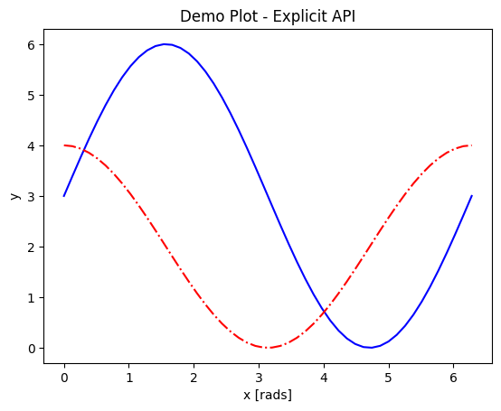
The outputs look the same above because the example was chosen to work with both APIs, but there is a lot that can be done with the explicit API but not the implicit API. A prime example is using the subplots function for its main purpose, which is to support and format 2 or more separate sets of axes on the same figure.
Subplots and Subplot Mosaics
For the standard plt.subplots(nrows=nrows, ncols=ncols) command, the shape of axes will be
2D if both
nrowsandncolsare given,1D if either
nrowsorncolsare provided but not both, or0D (not iterable) if neither are given.
import numpy as np
import matplotlib.pyplot as plt
%matplotlib inline
x = np.linspace(0,2*np.pi, 50)
fig, axes = plt.subplots(nrows=2, sharex=True)
fig.subplots_adjust(hspace=0.05) #reduces space between 2 plots
axes[0].plot(x,3+3*np.sin(x),'b-', label=r'3+3$\times$sin(x)')
axes[1].plot(x, 2+2*np.cos(x), 'r-.', label=r'2+2$\times$cos(x)')
axes[1].set_xlabel('x [rads]')
for ax in axes:
ax.legend()
ax.set_ylabel('y')
axes[0].set_title('Demo Plot - Explicit API')
plt.show()
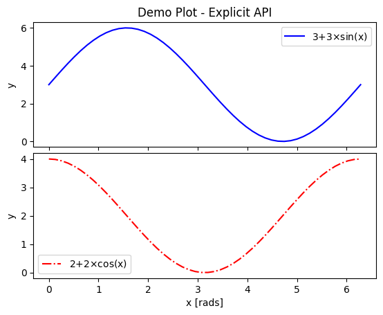
There are also the plt.subplot() and fig.add_subplot() methods, but they require more code to put >1 plot on a single figure. Each plot much be added 1 at a time, and there can be no more than 9 plots on one figure. The main benefit of these alternatives is that different coordinate projections can be set for each subplot in a figure with multiple subplots, as the example below demonstrates.
import numpy as np
import matplotlib.pyplot as plt
%matplotlib inline
x = np.linspace(0,2*np.pi, 50)
# for variable projections
fig = plt.figure(figsize=(8,4))
ax1 = plt.subplot(121)
#once labels are added, have to break up plt.plot()
# args cannot follow kwargs
ax1.plot(x,3+3*np.sin(x),'b-', label=r'3+3$\times$sin(x)')
ax1.plot(x, 2+2*np.cos(x), 'r-.', label=r'2+2$\times$cos(x)')
ax1.set_xlabel('x [rads]')
ax1.set_ylabel('y')
ax1.legend()
ax1.set_title('a) Cartesian projection (default)')
ax2 = plt.subplot(122, projection='polar')
ax2.plot(x, 3+3*np.sin(x), 'b-', x, 2+2*np.cos(x), 'r-.')
ax2.set_title('b) Polar projection')
fig.suptitle('Demo Plots')
plt.show()
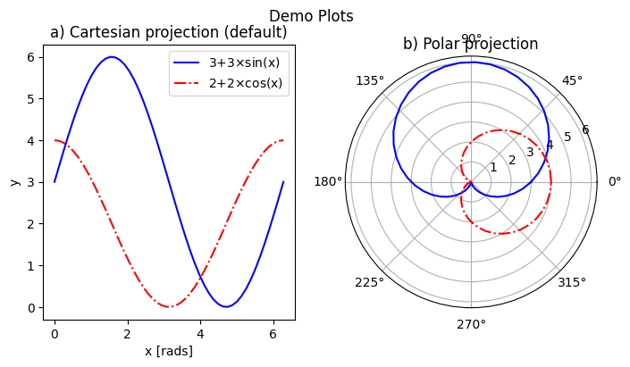
The 3-digit number in parentheses gives the position of that set of axes on the subplot grid: the first digit is the total number of panels in a row, the second digit gives the number of plots in a column, and the last digit is the 1-based index of that plot as it would appear in a flattened ordered list. E.g. if a subplot grid had 2 rows and 3 columns, the top row would be indexed [1,2,3], and the bottom row would be indexed [4,5,6].
The final alternative is plt.subplot_mosaic(), which allows one to easily set subplots to span multiple rows or columns.
Each plot is identified by a single ASCII character (any alphanumeric character) in a string. Multiple occurrences of the same character are used to indicate where that plot spans multiple rows or columns.
The character
.is used to denote gaps.The character sequence can be intuitive like in the example below, where each row on the grid is on a separate line, but you can also separate rows with
;for more compact code (no spaces!).There is a
per_subplot_kw, which accepts a nested dictionary where the single-character plot labels are keys, and the values are themselves dictionaries with axes methods or kwargs ofplt.subplot()as keys and their inputs as values. These are useful if you need to, for example, specify a different axis projection for each plot.
import numpy as np
import matplotlib.pyplot as plt
%matplotlib inline
x = np.linspace(0,2*np.pi, 50)
fig, axd = plt.subplot_mosaic(
"""
ABB
AC.
DDD
""", layout="constrained",
per_subplot_kw={"C": {"projection": "polar"},
('B','D'): {'xscale':'log'}})
for k, ax in axd.items():
ax.text(0.5, 0.5, k, transform=ax.transAxes,
ha="center", va="center", color="b",
fontsize=25)
axd['B'].plot(x, 1+np.sin(x), 'r-.',
label='Plot 1')
axd['D'].plot(x,0.5+0.5*np.sin(x), 'c-',
label='Plot 2')
fig.legend(loc='outside upper right')
<matplotlib.legend.Legend at 0x7f8804232710>
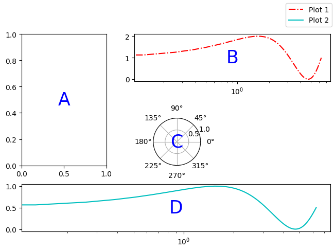
The above demo also includes an example of how to add text to a plot. More on that later.
Saving your Data
The Matplotlib GUI has a typical save menu option (indicated by the usual floppy disc icon) that lets you set the name, file type, and location. To save from your code or at the command line, there are 2 options:
plt.savefig(fname, *, transparent=None, dpi='figure', format=None)is the general-purpose save function. There are other kwargs not shown here, but these are the most important. The file type can be givenformator inferred from an extension given infname. The defaultdpiis inherited fromplt.figure()orplt.subplots(). Iftransparent=True, the white background of a typical figure is removed so the figure can be displayed on top of other content.plt.imsave(fname, arr, **kwargs)is specifically for saving arrays to images. It accepts a 2D (single-channel) array with a specified colormap and normalization, or an RGB(A) array (a stack of images in 3 color channels, or 3 color channels and an opacity array). Generally you also have to setorigin='lower'for the image to be rendered right-side up.
A few common formats that Matplotlib supports include PDF, PS, EPS, PNG, and JPG/JPEG. Other desirable formats like TIFF and SVG are not supported natively but can be used with the installation of the Pillow module. Matplotlib has a tutorial here on importing images into arrays for use with ``pyplot.imshow()`. <https://matplotlib.org/stable/tutorials/images.html>`__
Standard Available Plot Types
These are the categories of plots that come standard with any Matplotlib distribution:
Pairwise plots (which accept 1D arrays of x and y data to plot against each other),
Statistical plots (which can be pairwise or other array-like data),
Gridded data plots (for image-like data, vector fields, and contours),
Irregularly gridded data plots (which usually rely on some kind of triangulation), and
Volumetric data plots.
Volumetric, polar, and other data that rely on 3D or non-cartesian grids typically require you to specify a projection before you can choose the right plot type. For example, for a polar plot, you could
set
fig, ax = plt.subplots(subplot_kw = {"projection": "polar"})to set all subplots to the same projection,set
ax = plt.subplot(nrows, ncols, index, projection='polar')to add one polar subplot to a group of subplots with different coordinate systems or projections, orset
ax = plt.figure().add_subplot(projection='polar')if you only need 1 set of axes in total.
For volumetric data, the options are similar:
fig, ax = plt.subplots(subplot_kw = {"projection": "3d"})for multiple subplots with the same projection,ax = plt.subplot(nrows, ncols, index, projection='3d')for one 3D subplot among several with varying projections or coordinate systems, orax = plt.figure().add_subplot(projection='3d')for a singular plot.
For all of the following subsections on plot type categories, commands are provided with short descrptions of their behaviors and explanations of non-obvious args and kwargs. If not all positional args are required, optional ones are shown in square brackets ([]). Kwargs are shown similarly to how they are in the official documentation, set equal to either their default values or themselves. Kwargs shown as equal to themselves are technically None by default, but are shown this way to indicate that they are part of a set of which one or more kwargs are required. Only frequently used and/or tricky kwargs are shown; refer to the official documentation on each command for the complete list.
Colors and colormnaps. Every plotting method accepts either a single color (the kwarg for which may be c or color) or a colormap (which is usually cmap in kwargs). Matplotlib has an excellent series of pages on how to specify colors and transparency, how to adjust colormap normalizations, and which colormaps to choose based on the types of data and your audience.
Pairwise Plots
The following is a list of plain pairwise plot commands and descriptions, including notes about common gotchas.
.plot(x1, y1, fmt1, x2, y2, fmt2, ...)or.plot(x1, y1, fmt1, label='label')lets you specify any number of unlabeled lines on the same plot, OR plot one line or set of pairwise data with arbitrary format and a label..semilogx(),.semilogy(), and.loglog()are wrappers for.plot()that accept the same args and kwargs but rescale the x, y, or both axes to log scale.
.scatter(x, y, s=rcParams['lines.markersize'] ** 2, c=‘tab:blue’)plots data as points with tunable shapes, sizes, and colors..stem(x, y[, z])is visually similar to scatter with lines connecting the points to a baseline (default = x-axis), and returns a 3-tuple of the markers, stemlines, and baseline..fill_between(x, y1, y2=0, color=‘tab:blue’, alpha=1)lets you plot 2 lines and shade between them, which is handy for, say, showing an uncertainty region around a model function. Awherekwarg lets you fill only areas that match 1 specific condition..bar(cat, count, bottom=0)and.barh(cat, count, left=0)produce vertical and horizontal bar plots, respectively..stackplot(x, ys, baseline=0)resembles layers offill_between()plots;xmust be 1D, butyscan be a 2D array or a dictionary of 1D arrays..stairs(y, edges=[x[0]]+x)is a way of rendering a stepwise function or histogram where each step is heightybetween pointsx[i]andx[i+1], i.e. the arrayedgesmust always have 1 more element thany..step(x, y, where=‘pre’)is superficially similar tostairs, butxandyare the same length, and you can adjust how the steps are aligned with respect tox.
Apart from .scatter(), most of these plots are more suited for models rather than measurements. Related plots are shown on grids so you can see how indexed axes objects work. Note that sharex (and sharey) turns off tick labels for axes along the interior boundaries of cells in the grid.
import numpy as np
import matplotlib.pyplot as plt
%matplotlib inline
import matplotlib as mpl
fig, axes=plt.subplots(nrows=2,ncols=2, sharex=True)
plt.subplots_adjust(hspace=0.05) #lateral spacing is adjusted with wspace kwarg
#1. Line plots
x = np.linspace(0,2*np.pi, 50)
axes[0,0].plot(x,1+np.sin(x),'b-', x, 2+2*np.cos(x), 'r-.')
axes[0,0].set_ylabel('y')
#2. scatter (line plot data with added noise, colored by amplitude)
y1 = (2+2*np.cos(x))*np.random.random_sample(len(x))
y2 = (1+np.sin(x))*np.random.random_sample(len(x))
axes[0,1].scatter( x, y1, s=y1*20, c=y1, cmap=mpl.colormaps['plasma'], edgecolors='b')
axes[0,1].scatter( x, y2, c='k', marker='+')
#3. stem (more noisy line plot data)
markers,stems,baseline = axes[1,0].stem( x, y1, linefmt='k-', bottom=1.0)
stems.set_linewidth(0.75)
markers.set_markerfacecolor('teal')
axes[1,0].set_xlabel('x [rads]')
axes[1,0].set_ylabel('y')
#4. fill-between with the where kwarg
# single command without where fills both sides the same color
axes[1,1].fill_between( x, 1, y1, color='b', alpha=0.5, where = y1 >= 1)
axes[1,1].fill_between( x, y1, 1, color='r', alpha=0.5, where = y1 < 1)
axes[1,1].set_xlabel('x [rads]')
plt.show()
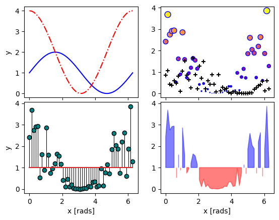
import numpy as np
import matplotlib.pyplot as plt
%matplotlib inline
rng = np.random.default_rng()
grades = rng.integers(low=55, high=100, size=[4,4])
subj = ['math', 'hist', 'lang', 'sci']
names = ['Tom', 'Liz', 'Harry', 'Jane']
gbook = dict(zip(subj,grades))
fig, axes = plt.subplots(ncols=2, figsize=(8,4))
axes[0].bar(names, gbook['math'],color='c',
hatch=['\\', 'o', 'x', '*'])
axes[0].set_ylabel('Math scores')
axes[1].barh(subj, grades[:,-1], color=['c','b','m','r'])
axes[1].set_xlabel("Jane's scores")
Text(0.5, 0, "Jane's scores")
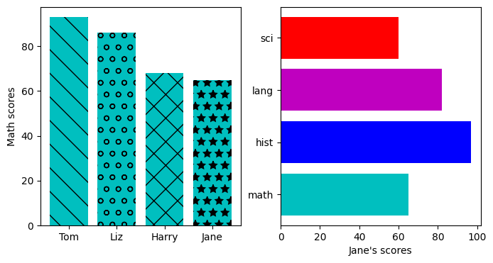
import numpy as np
import matplotlib.pyplot as plt
%matplotlib inline
import pandas as pd
wwii_spending = pd.read_csv('docs/day1/wwii-military-spending-pct-gdp.txt',delimiter='\t',
index_col=0)
print(wwii_spending)
year = wwii_spending.index.to_numpy()
fig,axes = plt.subplots(ncols=2,figsize=(9,4), width_ratios=[5,4])
axes[0].stackplot(year, wwii_spending.to_numpy().T,
labels=wwii_spending.columns, baseline='wiggle')
axes[0].set_xlabel("Year")
axes[0].set_ylabel("Military Spending (% of Total Income)")
axes[0].set_ylim(top=250)
axes[0].legend(loc='upper center', ncols=3)
axes[1].step(year, wwii_spending['USSR'], where='pre', ls='--',
color='tab:orange', label='pre')
axes[1].step(year, wwii_spending['USSR'], where='post', ls='-.',
color='tab:purple', label='post')
axes[1].step(year, wwii_spending['USSR'], where='mid',
color='tab:red', label='mid')
axes[1].set_xlabel("Year")
axes[1].set_ylabel("USSR Military Spending (% of Total Income)")
axes[1].legend()
plt.show()
US Germany UK USSR Italy Japan
Year
1939 1 23 15 12 8 22
1940 2 40 44 17 12 22
1941 11 52 53 28 23 27
1942 31 64 52 61 22 33
1943 42 70 55 61 21 43
1944 42 75 53 53 0 76
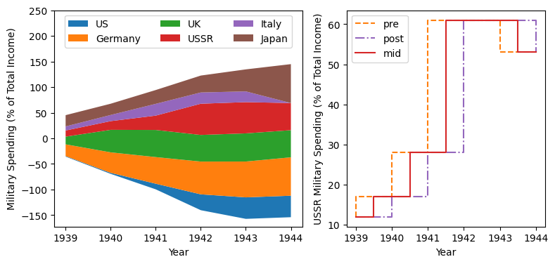
Statistical Plots
Statistical plots include the following:
.errorbar(x, y, xerr=xerr, yerr=yerr)works similarly toscatter()but additionally accepts error margins in either or both the x- and y-directions.xerrandyerrmay be either 1\(\times n\) or 2\(\times n\) (for asymmetric error bars) where \(n\) is the length of x and y.Upper and lower limits kwargs,
uplims,lolims,xlolims, andxuplimsaccept 1D boolean arrays whereTrueindicates that the upper, lower, left, and/or right error bars (respectively) of the given point are limits.Note—
xerroryerrat a point with a limit must still have a suitable non-zero fill value in order to draw an appropriately-sized limit arrow.errorbar()by default connects sequential data points with a line unless you setlinestyle=''(yes, that’s different from how it’s done forplot()).
.hist(x, bins=10)draws 1D histograms wherebinscan be either an integer number of bins or a fixed array of bin edges, and bins may also be log-scaled in height..hist2d(x, y, bins=100)draws a 2D histogram wherebinscan be an integer number of bins along both axes, a 2-tuple of iteger numbers of bins along each axis individually, a 1D array of bin edges along both axes, or a 2\(\times\)n array of bin edges, one 1D array per axis.Bins are colored by counts according to the colormap and intensity scale normalization (linear, log, other) of your choice.
.hexbin(x, y, C=None, gridsize=100)is functionally somewhere betweenhist2dandimshow(see section on grid data);xandycan be scattered data or the coordinates of the dataC..boxplot(X)takes an array-likeX, represening n 1D distributions, plots a rectangle spanning the upper and lower quartiles with a line marking the median and errorbar-like “whiskers” extending 1.5 times the interquartile range from the box..violinplot(X)is similar toboxplot()but instead of the boxes and whiskers, it shows bidirectional histogram KDEs (basically smoothed histograms) of each distribution spanning the full range of the data..ecdf(x)plots the empirical cumulative distribution function ofx, which is very similar to usinghist(x, bins=len(x), cumulative=True), i.e. it’s a cumulative stepwise function where every point is its own step..eventplot(X)(rare outside neurology) plots sequences of parallel lines at the positions given byX, which may be 1D or 2D depending on whether there are multiple sequences of events to plot or just 1..pie(wedges)plots a pie chart given relative or absolute wedge sizes. Avoid these: they waste a lot of space and the human eye doesn’t read relative angles well.
It’s hard to load a good data set to demonstrate statistical plots without Pandas and Seaborn, and since we’ll cover those tomorrow, it’s not worth the effort to avoid them. Seaborn includes some public datasets accessible via the load_dataset() function, which it loads into a Pandas DataFrame. The Penguins dataset is a collection of real measurements of the bills and flippers of 3 species of penguin: Adelaide, Chinstrap, and Gentoo.
import numpy as np
import matplotlib.pyplot as plt
%matplotlib inline
import pandas as pd
import seaborn as sb
penguins = sb.load_dataset('penguins') #this loads into a Pandas DataFrame
chinstrap = penguins.loc[penguins['species']=='Chinstrap']
#mock up some individual error bars (pretend those penguins are squirmy)
xs = chinstrap['bill_length_mm']
ys = chinstrap['flipper_length_mm']
rng = np.random.default_rng()
xerrs = abs(rng.normal(xs.mean(), xs.std(), size=len(xs))-xs.mean())
yerrs = abs(rng.normal(ys.mean(), ys.std(), size=len(ys))-ys.mean())
fig, ax = plt.subplots()
ax.errorbar(xs,ys, xerr=xerrs,yerr=yerrs,
capsize=2,linestyle='',color='b',
marker='.',ecolor='k')
ax.set_xlabel('Bill length [mm]')
ax.set_ylabel('Flipper length [mm]')
Text(0, 0.5, 'Flipper length [mm]')
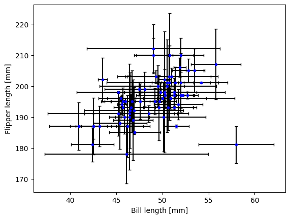
To combine the hist() and hist2d() examples, let’s make a plot of joint and marginal distributions, based on the official demo with histogram marginal distributions around a scatter plot. A proper corner plot is much simpler to do with Seaborn, but this will demonstrate not just of how the histogram functions look, but how to scale and position connected subplots that are not the same size as the main plot, and how to place a colorbar within a subplot mosaic.
import numpy as np
import matplotlib.pyplot as plt
%matplotlib inline
import pandas as pd
import seaborn as sb
penguins = sb.load_dataset('penguins') #this loads into a Pandas DataFrame
def corner_2p(xdata, ydata, ax2d, ax_histx, ax_histy):
# no labels
ax_histx.tick_params(axis="x", labelbottom=False)
ax_histy.tick_params(axis="y", labelleft=False)
nbins = int(np.ceil(2*len(xdata)**(1/3))) #Rice binning rule
# the central 2D histogram:
n,xb,yb,img = ax2d.hist2d(xdata, ydata, bins = [nbins,nbins])
#use x- & y-bins from 2D histogram to align them
ax_histx.hist(xdata, bins=xb)
ax_histy.hist(ydata, bins=yb, orientation='horizontal')
ax_histx.sharex(ax2d)
ax_histy.sharey(ax2d)
return img
fig, axd = plt.subplot_mosaic("a.;Bc;d.",layout="constrained",
height_ratios=[1, 3.5, 0.5],
width_ratios=[3.5, 1],
figsize=(6,6), dpi=100)
jointhist = corner_2p(penguins.dropna()['bill_length_mm'],
penguins.dropna()['flipper_length_mm'],
axd['B'], axd['a'], axd['c'])
axd['B'].set_xlabel('Bill length [mm]')
axd['B'].set_ylabel('Flipper length [mm]')
cb = fig.colorbar(jointhist,cax=axd['d'],
orientation='horizontal')
cb.set_label('Number of Penguins')
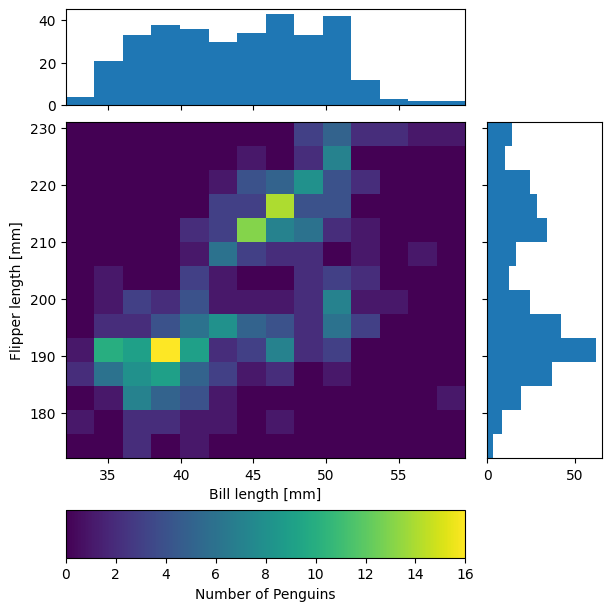
import numpy as np
import matplotlib.pyplot as plt
%matplotlib inline
import pandas as pd
import seaborn as sb
penguins = sb.load_dataset('penguins') #this loads into a Pandas DataFrame
specs = penguins.dropna().groupby(['species'])
spbills = {k:specs.get_group((k,))['bill_length_mm'].to_numpy()
for k in penguins['species'].unique()}
#Box and Violin plots
fig,axes = plt.subplots(ncols=2, sharey=True)
axes[0].boxplot( list(spbills.values()) )
axes[0].set_ylabel('Bill Length [mm]')
axes[1].violinplot( list(spbills.values()), showmedians=True)
for ax in axes:
ax.set_xticks([x+1 for x in range(3)], labels=list(spbills.keys()) )
ax.set_xlabel('Penguin Species')
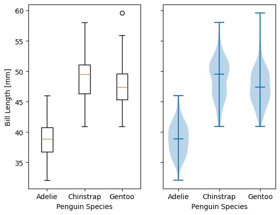
Plots for Gridded Data
.contour(X, Y, Z)and.contourf(X, Y, Z)are nearly identical except that the former plots only line contours according to the height/intensity ofZon the gridX,Y, while the latter fills between the lines.The line contour function
contour(), if assigned to a variable, has aclabel()method you can call to print the numerical value of each level along each of the contours.
.imshow(Z, origin='upper')can plot and optionally interpolate a 2D intensity image, a \(n\times m \times\) 3 stack of RGB images, or a \(n\times m \times\) 4 stack of RGB-A images (A is a fractional opacity value between 0 and 1), on a grid of rectangular pixels whose aspect ratio is determined by theaspectkwarg (default'equal').Typically, one must set
origin='lower'to render the image the right way up.If each pixel is an integer width in the desired units, one can use the
extentkwarg to assign the coordinates (less reliable than standard coordinate projections).
.pcolormesh(X, Y, Z)is slower thanimshowbut gives more control over the shape of the grid because grid pixels need not have right-angled corners or straight sides..pcolor(X, Y, Z)is a generalized version ofpcolormesh()mthat allows one to pass masked gridsXandYin addition to masked imagesZ, but because of this it is much slower..barbs([X, Y,] U, V, [C])is a specialized plot type for meteorologists that uses a bar with spikes and flags to indicate wind speed and direction..quiver([X, Y,] U, V, [C])plots a 2D field of arrows whose size and length are proportional to the magnitudes of U and V.Including X and Y establishes a coordinate grid that lets you specify U and V in units of the grid.
C lets you assign the arrows a color map according to their magnitude.
.streamplot([X, Y,] U, V)draws streamlines of a vector flow with a streamline density controlled by thedensitykwarg.
For barbs(), quiver(), and streamplot(), X,Y are coordinates (optional), U,V are the mandatory x and y components of the vectors, and C is the color (optional). For all of the above where X and Y appear, X and Y must generally be computed with np.meshgrid().
import numpy as np
import matplotlib.pyplot as plt
%matplotlib inline
#mock up some data
x = np.arange(-3.0, 3.0, 0.025)
y = np.arange(-2.0, 2.0, 0.025)
X, Y = np.meshgrid(x, y)
Z1 = np.exp(-X**2 - Y**2)
Z2 = np.exp(-(X - 1)**2 - (Y - 1)**2)
Z = (Z1 - Z2) * 2
fig, axes=plt.subplots(nrows=2,figsize=(5,5))
CS = axes[0].contour(X,Y,Z)
axes[0].clabel(CS, inline=True, fontsize=10)
CF = axes[1].contourf(X,Y,Z, cmap=mpl.colormaps['magma'])
fig.colorbar(CF) #yes, colorbars for contours are automatically discretized
<matplotlib.colorbar.Colorbar at 0x7f87c98887d0>
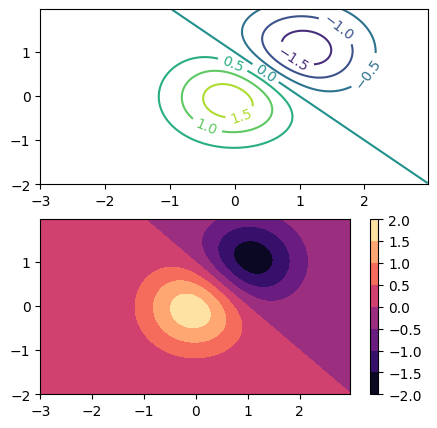
import numpy as np
import matplotlib.pyplot as plt
%matplotlib inline
# 11x7 grid
Xs, Ys = np.meshgrid(np.arange(-0.5, 10, 1),
np.arange(4.5, 11, 1))
Xskew = Xs + 0.2 * Ys # tilt the coordinates.
Yskew = Ys + 0.3 * Xs
fig, ax = plt.subplots()
ax.pcolormesh(Xskew, Yskew, np.random.rand(6, 10))
<matplotlib.collections.QuadMesh at 0x7f87c96a5450>
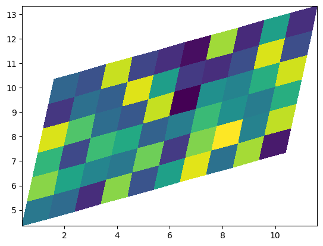
import numpy as np
import matplotlib.pyplot as plt
%matplotlib inline
X, Y = np.meshgrid(np.arange(0, 2 * np.pi, .2), np.arange(0, 2 * np.pi, .2))
U = np.cos(X)
V = np.sin(Y)
fig, axs = plt.subplots(ncols=2, nrows=2,dpi=200,figsize=(7,7))
fig.subplots_adjust(hspace=0.3)
M = np.hypot(U, V)
# Scale is inverse. Width is fraction of plot size; start around ~0.005
#1. imshow()
C2 = axs[0,0].imshow(M,cmap='plasma',
extent=[np.min(X),np.max(X),
np.min(Y),np.max(Y)])
axs[0,0].set_title('Imshow of vector magnitudes')
#2. quiver()
Q = axs[0,1].quiver(X, Y, U, V, scale_units='inches',scale=12,width=0.004)
qk = axs[0,1].quiverkey(Q, 0.74, 0.51, np.max(M),
r'${:.1f} \frac{{m}}{{s}}$'.format(np.max(M)),
labelpos='W',coordinates='figure')
#labelpos can be N, S, E, or W
axs[0,1].set_title('Quiver')
#3. streamplot()
SP = axs[1,0].streamplot(X, Y, U, V, color=M, linewidth=1.2,cmap='cividis')
axs[1,0].set_title('Streamplot')
#4. barbs()
barbs = axs[1,1].barbs(X[::6,::6], Y[::6,::6],
10*U[::6,::6], 10*V[::6,::6])
axs[1,1].set_title('Barbs (downsampled)')
plt.show()
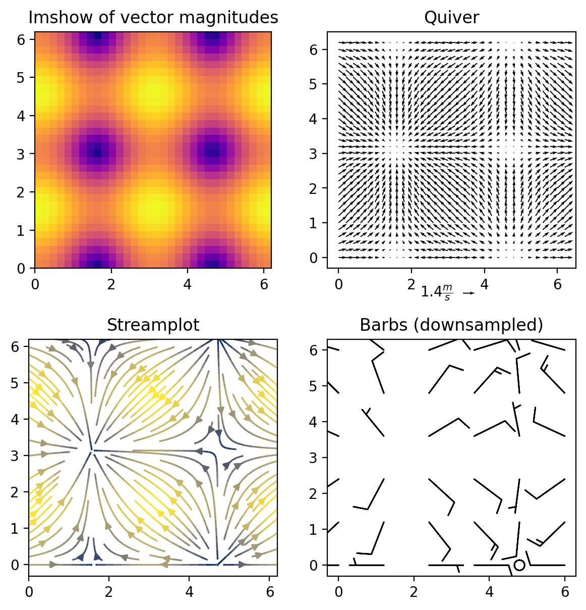
Plots for Data on Irregular or Non-Cartesian Grids
Most of the following functions accept a Triangulation object in lieu of x and y, and indeed do the triangulation internally if x and y are provided. If you decide to provide your own triangulation, it will need to be computed with the Triangulation function of matplotlib.tri.``mpl.tri.Triangulation(x, y, triangles=None)`` computes Delaunay triangles from x and y vertex coordinates if triangles is None, or takes an array of 3-tuples to specify the triangle sides from indexes of x and y in anticlockwise order.
.tricontour(Triangulation, z)or.tricontour(x, y, z)draw contour lines (the number of which can be specified with thelevelskwarg) on an unstructured triangular grid according to the intensityz..tricontourf(Triangulation, z)or.tricontourf(x, y, z)are the same as the previous function except instead of dilineating the edges of each level with a thin line, every level is shaded across its full width..triplot(Triangulation)or.triplot(x, y)draw only the edges of a triangular mesh..tripcolor(Triangulation, c)or.tripcolor(x, y, c)shade the triangles of a triangular mesh according to the arraycto generate a pseudocolor image whose “pixels” are triangles.
The latter 2 functions are also handy for plotting functions that are regular in a sense but not with respect to a Cartesian grid; their usefulness in that respect shines more in 3D.
The contouring functions might be tempting if you have scattered data, but if what you want to contour is point density, you’re better off making a histogram or contouring a kernel density estimation. The tricontour and tricontourf functions are only for data where each triangle vertex is already associated with some z-value, and
where adjacent z-values are spatially correlated.
import numpy as np
import matplotlib.pyplot as plt
%matplotlib inline
import matplotlib.tri as tri
#Mock up data of something that looks like vaguely like an epidemic or something similar
np.random.seed(19990101)
rads = np.random.lognormal(size=100)
angs = np.random.uniform(low=0.0, high=2*np.pi, size=100)
xs = (rads * np.cos(angs))
ys = (rads * np.sin(angs))
zs = np.random.randint(1,high=50, size=100)
fig,ax = plt.subplots()
ax.tricontourf(xs,ys,zs)
ax.triplot(xs,ys,'k.-', lw=0.5)
plt.show()
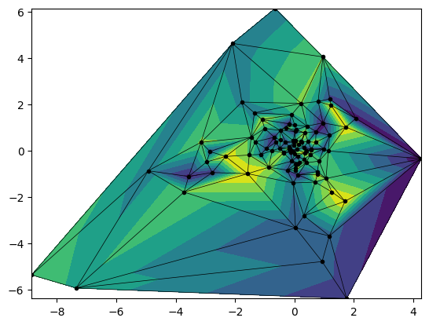
Volumetric Plots
To render in 3D, all functions below must be plotted on figure with fig, ax = plt.subplots(subplot_kw = {"projection": "3d"}) or an axes instance with ax = plt.subplot(nrows, ncols, index, projection = "3d"):
Many normally pairwise functions accept a 3rd parameter:
.scatter(x, y, z),.plot(x, y, z),.stem(x, y, z),.errorbar(x, y, z), etc.For scattered data, it is good to draw a lines from the points to some baseline, but
stem()is not necessarily a good way to do this because of the formatting limitations and because there is nozorderkwarg.
.voxels([x, y, z], filled)(filledis a 3D boolean mask) fills a volume with cubic pixel blocks..plot_surface(X, Y, Z)(X,Y, andZare computed withnp.meshgrid()) essentially makes an elevation map where the surface is shaded like it would be for an image plotted withimshoworhist2d..plot_wireframe(X, Y, Z)(X,Y, andZare computed withnp.meshgrid()) plots the surface so it resembles a net or curved grid..plot_trisurf(x, y, z)is similar toplot_wireframeexcept the net is made of triangles..bar3d(x, y, bottom, width, depth, top, shade=True)can either plot multiple rows of 2D bar plots stacked depthwise, or make a figure that looks like a Manhattan skyline..quiver(x, y, z, u, v, w)plots a 3D field of arrows where (x,y,z) define the arrow positions and (u,v,w) defines their directions..quiver()is not recommended in 3D, and especially not with variable color—each arrow is constructed of 3 line patches, resulting in an “arrow” that looks truncated and can have 3 different colors.
Note
Be aware that Matplotlib’s algorithm for determining the relative depth of multiple 3D elements is error-prone, particularly in the non-interactive in-line display used by Jupyter. It’s generally better to work on 3D graphics in a GUI (e.g. with Spyder, PyCharm, or VSCode) that lets you rotate the image to select the clearest angle anyway, but the rendering order may not be correct, even if you try to brute-force it with the zorder kwarg. Sometimes 2D projections are just safer.
Below is a sample of how scatter(x,y,z) handles depth, and how you can achieve something similar with stem() if you want your readers to be able to read off coordinates to some extent. The plots are of the positions of the Sun and its nearest 20 stellar neighbors.
import numpy as np
import matplotlib.pyplot as plt
%matplotlib inline
x,y,z,c = np.genfromtxt('docs/day1/solar_neighborhood.txt', encoding='ascii',
dtype=[('x','<f8'),('y','<f8'),('z','<f8'), ('c','<U12')],
converters={3:lambda s: 'tab:'+str(s)}, unpack=True)
zsun = abs(min(z))
z = z+zsun
fig, axes = plt.subplots(ncols=2, subplot_kw = {"projection": "3d"}, dpi=150)
#Left: scatter3d
axes[0].scatter(x,y,z,c=list(c))
#Right: stem3d
for clr in set(c):
idx = np.where(c==clr)
if 'orange' in clr:
clr='m'
elif 'olive' in clr:
clr='y'
else:
clr=clr[4]
axes[1].stem(x[idx],y[idx],z[idx], linefmt=str(clr+':'),
markerfmt=str(clr+'o'),bottom=0.0, basefmt=" ")
for ax in axes:
ax.stem([0],[0],[zsun], linefmt='k--',markerfmt='k*',
bottom=0.0, basefmt=" ", label='Sun')
ax.legend()
plt.title('Nearest 20 Stars (Scale in LY)')
plt.show()
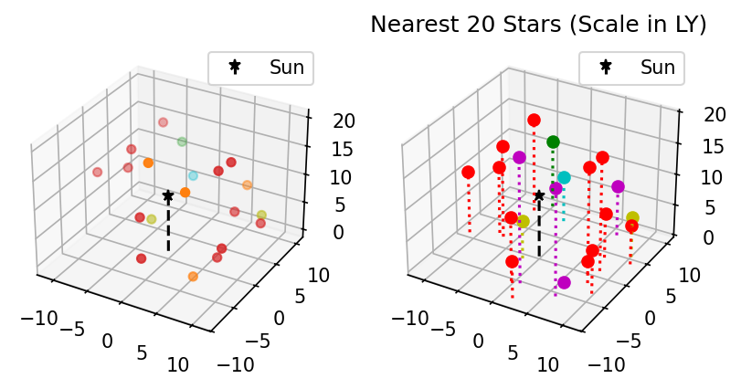
import numpy as np
import matplotlib.pyplot as plt
%matplotlib inline
from matplotlib import cm
fig, axes = plt.subplots(ncols=2,
subplot_kw={"projection":"3d"},
dpi=180, figsize=(5,11))
fig.subplots_adjust(wspace=0.8)
# Make data.
X = np.arange(-5, 5, 0.25)
Y = np.arange(-5, 5, 0.25)
X, Y = np.meshgrid(X, Y)
R = np.sqrt(X**2 + Y**2)
Z = np.cos(R)
# Plot the surfaces.
surf = axes[0].plot_surface(X, Y, Z, cmap=cm.RdYlBu,
linewidth=1, antialiased=True)
axes[0].set_xlabel('x')
axes[0].set_ylabel('y')
axes[0].set_zlabel('z')
mesh = axes[1].plot_wireframe(X, Y, Z, color='k', linewidth = 0.5,
rstride=3, cstride=3)
axes[1].contourf(X, Y, Z, zdir='z', offset=-1, cmap='coolwarm')
axes[1].contourf(X, Y, Z, zdir='x', offset=-5, cmap='coolwarm')
plt.show()
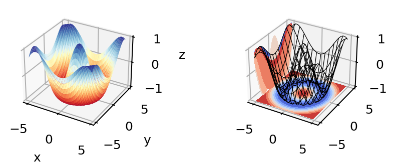
Formatting and Placing Plot Elements
Placing Legends and Text
Text. There are 2 functions for adding text to plots at arbitrary points: .annotate() and .text()
.text()is base function; it only adds and formats text (e.g.haandvaset horizontal and vertical alignment).annotate()adds kwargs to format connectors between points and text; coordinates for point and text are specified separately
Positions for both are given in data coordinates unless one includes transform=ax.transAxes. ax.transAxes switches from data coordinates to axes-relative coordinates where (0,0) is lower left corner of the axes object, (1,1) is the top right corner of the axes, and values <0 or >1 are outside of the axes (figure area will stretch to accommodate up to a point).
Legends. Typically, it’s enough to just use plt.legend() or ax.legend() if you want to label multiple functions on the same plot.
Legends can be placed with the
lockwarg according to a number from 0 to 10, or with a descriptive string like'upper left'or'lower center'. In the number code system, 0 (default) tells matplotlib to just try to minimize overlap with data, and the remaining digits represent ninths of the axes area (“center right” is duplicated for some reason).You can also arrange the legend entries in multiple columns by setting the
ncolskwarg to an integer greater than 1, which can help if space is more limited vertically than horizontally.Legend placement via
bbox_to_anchoruses unit-axes coordinates (i.e. the same coordinates described above astransform=ax.transAxes) by default, and can specify any coordinates on or off the plot area (x and y are within the plot area if they are between 0 and 1, and outside otherwise).Whole-figure legends (i.e.
fig.legend()) can use a 3-word string where the first word is “outside”, likeloc='outside center right'.
Mathtext
Most journals expect that you typeset all variables and math scripts so they appear the same in your plots main text. Matplotlib now supports most LaTeX math commands, but you need to know some basic LaTeX syntax, some of which is covered in that link. For more information, you can refer to the WikiBooks documentation on LaTeX math, starting with the Symbols section.
LaTeX may need to be installed separately for Matplotlib versions earlier than 3.7, or for exceptionally obscure symbols or odd-sized delimiters.
Unfortunately, Python and LaTeX both use curly braces ({}) as parts of different functions, so some awkward adjustments had to be made to resolve the collision.
In
str.format(), all curly braces ({}) associated with LaTeX commands must be doubled ({{}}), including nested braces. An odd-numbered set of nested curly brace pairs will be interpreted as a site for string insertion.Many characters also require the whole string to have an
r(for raw input) in front of the first single- or double-quote, like \(\times\) (rendered as'$\times$'), \(\pm\) or \(\mp\)(rendered as'$\pm$'and'$\mp$'respectively), or most Greek letters.Most basic operator symbols (+, -, /, >, <, !, :, |, [], ()) can be used as-is, but some that have functional meanings in LaTeX, Python, or both (e.g. $ and %) must be preceded by a single- (LaTeX command symbols only) or double-backslash (\\) to escape their typical usage.
Spaces within any character sequence between two
$s are not rendered; they only exist to separate alphabetic characters from commands. You can insert a space with\;if you don’t want to split up the LaTeX sequence to add spaces.
You can use string insertion inside of formatting operators like the super- and subscript commands, but it can require a lot of sequential curly braces. The following is an example demonstrating some tricky typesetting. Note that you generally cannot split the string text over multiple lines because the backslash has other essential uses to the typesetting.
import numpy as np
import matplotlib.pyplot as plt
%matplotlib inline
v_init=15.1
error_arr=[-0.4,0.3]
fig,ax=plt.subplots(dpi=120,figsize=(5,5))
ax.set_aspect('equal') #arrowheads will slant if axes are not equal
ax.arrow(0,0,10.68,10.68,length_includes_head=True,color='b',
head_width=0.4)
ax.text(6, 5.4, r"$|\vec{{v}}_{{\mathrm{{init}}}}|$ = ${:.1f}_{{{:.1}}}^{{+{:.1}}}\;\mathrm{{m\cdot s}}^{{-1}}$".format(v_init,*error_arr),
ha='center',va='center',rotation=45.,size=14, color='b')
ax.set_xlim(0,12)
ax.set_ylim(0,12)
plt.show()
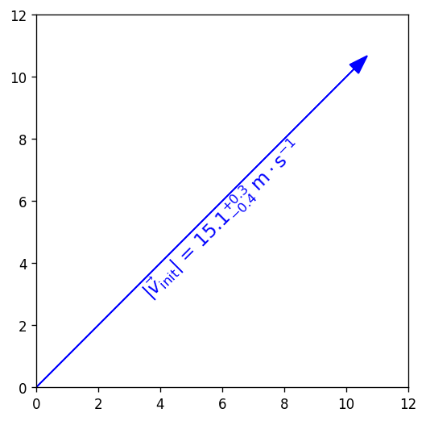
Formatting Axes
Axes objects (the ax in fig,ax=plt.subplots()) have dozens of methods and attributes apart from the function methods covered in the Standard Available Plot Types section. Most of the methods that are plotting functions are for formatting and labeling the axes. Among the most commonly used, some of which you’ve already seen, are:
ax.set_xlabel(str)andax.set_ylabel(str), which add titles to the axes, as was already shown.ax.set_title(str)adds a title to the top of the plotax.legend()adds a box with the names and markers of each function or data set on a plotax.grid()adds grid lines at the locations of major axes ticksax.set_xlim()andax.set_ylim(), which change the lower and upper bounds of the axes and readjust the shape of the data and axes scale increments accordinglyax.set_xscale()andax.set_yscale()let you change the spacing of the increments on each axes from linear to log, logit, symlog (log scaling that allows for negative numbers), asinh, mercator, function*, or functionlog*.*
'function'requires one to define both forward and reverse functions for transforming to/from linear and pass them as tuple of function names (e.g. as inax.set_yscale('function', functions=(forward, inverse))).'functionlog'is similar but additionally renders the axes with log-scaling.
ax.invert_xaxis()andax.invert_yaxis()do exactly what they sayax.secondary_xaxis()andax.secondary_yaxis()add secondary axes on the top and right sides, respectively, which may be tied to the primary axes by transformations or may be totally unconnected.These are NOT necessary to mirror the x and y axis ticks to the top and right; for that, you can just set
ax.tick_params(axis='both', which='both', top=True, right=True)wherewhichspecifies the set of ticks to modify (“major”, “minor”, or “both”).
ax.get_xticks()andax.get_yticks()return arrays of the current positions of the ticks along their respective axes, in data coordinates. Handy for use in computing the transformations for secondary axes or reformatting tick labels.
Any axes methods that have set in the name have a get counterpart that returns the current value(s) of whatever the set method would set or overwrite.
Note
Scales that are neither linear nor logarithmic are not suitable for histograms, contours, or image-like data.
Contours don’t tend to work well with log axes either: you’ll need to work in log units and use tick label formatters to override the labels (next section).
Axis Ticks and Locators
Usually automatic tick spacing is fine. However, you may need to modify the auto-generated tick labels and locators, or set them entirely by hand, if you want to have:
Units with special formats or symbols (e.g. dates and/or times, currencies, coordinates, etc.)
Irrational units (e.g. multiples of \(e\), fractions of \(\pi\), etc.)
Qualitative variables (e.g. countries, species, relative size categories, etc.)
Axis tick labels centered between major ticks
Secondary axes that are transformations of the primary axes
Custom or power-law axis scales
Log-, symlog-, or asinh scaling with labels on every decade and visible minor ticks over >7 decades
on one of more of your axes, or if you want any of the above on a colorbar. In these situations, you’ll need to manually adjust the ticks using various Locator functions kept in matplotlib.ticker as arguments of ax.<x|y>axis.set_<major|minor>_locator() methods (the getter counterparts of these functions will probably come in
handy here). Matplotlib also has ample support, templates, and explicit demos for most those situations, but there are a few situations where documentation is poor.
The following example demonstrates both LogLocator() (in which documentation on the numticks and subs kwargs are not very good) and ax.secondary_xaxis('top', functions=(prim2sec,sec2prim)).
import numpy as np
import matplotlib.pyplot as plt
%matplotlib inline
#blackbody curve for the temperature of the sun
# as a function of wavelength
c = 2.998*10**8.
k_b = 1.380649*10**-23.
hc = (2.998*10**8.)*(6.626*10**-34.)
def bb(wvl,T):
return ((2*hc*c)/(wvl**5)) * 1/(np.exp(hc/(wvl*k_b*T)) - 1)
wvs = np.logspace(-7.2,-3.0,471) #x-values
bb5777 = bb(wvs,5777.) #y-values
#===============================================================
import matplotlib.ticker as ticks
fig, ax = plt.subplots(dpi=120, figsize=(4,4))
ax.plot(wvs*10**9,bb5777,'k-')
# 1 nm = 10^-9 m, 1 THz = 10^12 Hz
secax = ax.secondary_xaxis('top',functions=(lambda x: 1000*c/x,
lambda x: 0.001*c/x))
#1st func. is primary-to-secondary
#2nd func. is secondary-to-primary
ax.set_xscale('log')
ax.set_yscale('log')
# PAY SPECIAL ATTENTION TO THE NEXT 4 LINES
ax.yaxis.set_major_locator(ticks.LogLocator(base=10,numticks=99))
ax.yaxis.set_minor_locator(ticks.LogLocator(base=10.0,subs=(0.2,0.4,0.6,0.8),
numticks=99))
ax.yaxis.set_minor_formatter(ticks.NullFormatter())
ax.tick_params(axis='y',which='both',right=True)
ax.set_xlabel('Wavelength [nm]')
secax.set_xlabel('Frequency [THz]')
ax.set_ylabel('Intensity [W(m$\cdot$sr$\cdot$nm)$^{-1}$]')
plt.show()
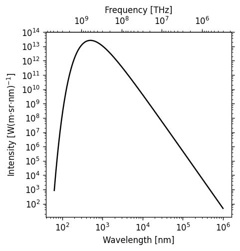
Log scaling is very common, so it’s worth going over these gotchas of the ticker.LogLocator() function before they make you waste half a day:
numticksmust be at least as large as the total number of major or minor axis ticks needed to span the axis, or else the whole line will be ignored and you’ll get a blank axis. Either calculate it in advance or just use a number large enough to border on silly (like 99).For minor ticks, include the
subskwarg and list relative increments between but not including the major ticks where you want minor ticks to be marked. Note thatsubsonly spans the distance from one major axis tick to the next, whilenumticksmust be enough to span the entire axis.If you show minor ticks, add
ax.<x|y>axis.set_minor_formatter(ticks.NullFormatter())to turn off minor tick labels, otherwise your axis tick labels will be very crowded.
Placing and Formatting Color Bars
Colorbars are methods of Figure, not Axes, in the explicit API. Each axis object must be passed to each colorbar() command explicitly, and the first arg must be a mappable: the plot itself, not the axis object.
If there are multiple subplots, colorbar() takes an ax kwarg to specify which to attach it to, which can be different from the axes that the colors refer to (this can be used to allow the same colorbar to reflect multiple plots with the same coloration).
The extend kwarg lets you indicate that 1 or both ends of the colorbar have been truncated to maintain contrast. There is also a shrink kwarg that helps one resize the colorbar to match a plot’s width or height (depending on orientation), because Matplotlib often makes the colorbar too large by default.
Ticks and locators for color bars are inferred from the plot by default, but can be overriden using the ticks and format kwargs of colorbar().
The
tickskwarg accepts all the same locator functions asax.[x|y]axis.set_[major|minor]_locator()The
formatkwarg accepts the same codes for formatting numbers as the curly braces dostr.format()statements, or a custom formatter function passed toticker.FuncFormatter(). This means you can useformatto force alternative displays of scientific notation, percentages*, etc. (* the normal percentage formatting command doesn’t seem to work for some versions, so you’ll need to use theFuncFormatterapproach).
import numpy as np
import matplotlib.pyplot as plt
%matplotlib inline
fig, (ax1, ax2) = plt.subplots(nrows=2,
figsize=[3,6],
dpi=120)
plt.subplots_adjust(hspace=-0.1)
img1 = ax1.imshow(Z1, cmap='magma')
img2 = ax2.imshow(Z2, norm='log', vmin=0.01)
cbar1 = fig.colorbar(img1, ax=ax1, extend='min',orientation='horizontal',
format= ticks.FuncFormatter(lambda x, _: f"{x:.0%}"))
# The _ is because FuncFormatter passes in both the label and the position,
# but we don't need the latter. The _ lets us dump the position.
cbar1.set_label('Fractional intensity')
cbar2 = fig.colorbar(img2, ax=ax2, shrink=0.5,
extend='both', format="{x:.0E}")
plt.show()
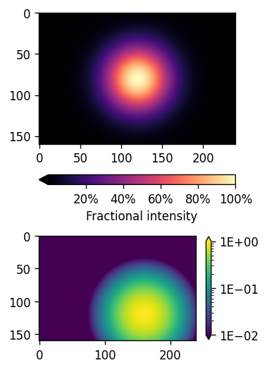
Key Points
Matplotlib is the essential Python data visualization package, with nearly 40 different plot types to choose from depending on the shape of your data and which qualities you want to highlight.
Almost every plot will start by instantiating the figure,
fig(the blank canvas), and 1 or more axes objects,ax, withfig, ax = plt.subplots(*args, **kwargs).Most of the plotting and formatting commands you will use are methods of
Axesobjects, but a few, likecolorbarare methods of theFigure, and some commands are methods both.
Note
Exercises and their solutions are provided separately in Jupyter notebooks. You may have to modify the search paths for the associated datafile(s). The data file for the Matplotlib exercises is exoplanets_5250_EarthUnits.csv.